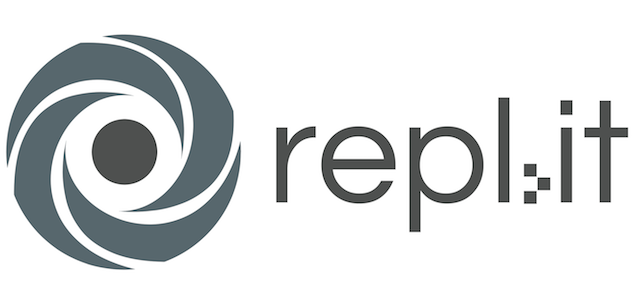

Portfolio
The following page contains projects that I have worked on in Mrs. Co's fifth period AP Computer Science PLTW class. Click on the images to view the full works.

 As a group, Kevin Loi, Sean Sami, and I took our own personal take on the Maze Starter by the official Scratch team. The basic orange ball is replaced with a hip Jake Paul sprite head that flashes snazzy colors. The boring blue wall now twirls and twists, making reaching the finish line a legitimate difficulty. Lastly, when you reach the finish line, our favorite YouTuber pops up as the Team 10 musical hit blares.
As a group, Kevin Loi, Sean Sami, and I took our own personal take on the Maze Starter by the official Scratch team. The basic orange ball is replaced with a hip Jake Paul sprite head that flashes snazzy colors. The boring blue wall now twirls and twists, making reaching the finish line a legitimate difficulty. Lastly, when you reach the finish line, our favorite YouTuber pops up as the Team 10 musical hit blares.
 This is a simple classic game of Snake. Using the arrow keys, control the figure to eat as many rats as possible without touching the wall or the growing tail.
This is a simple classic game of Snake. Using the arrow keys, control the figure to eat as many rats as possible without touching the wall or the growing tail.

AP Computer Science Principles
- Remix: Maze
- Snake
- Remix: Space Invaders This remix on the Space Invaders game includes minor modifications such as edited sprites, font changes, added sounded effects, and a pop up when you reach ten points, or win the game.
- Fundraiser Lisa Kim and I created the Fundraiser App to track profit when raising money. Users can register and log in from different devices. However, due to a time constraint, list data is currently saved locally on device with TinyDB, set to permanently erase once logged out. Future improvements will allow this information to be stored on Firebase, a realtime database.
- Little Panda Fighter
Portfolio
The following page contains projects that I have worked on in Mrs. Co's fifth period AP Computer Science PLTW class. Click on the images to view the full works.
As a group, Kevin Loi, Sean Sami, and I took our own personal take on the Maze Starter by the official Scratch team. The basic orange ball is replaced with a hip Jake Paul sprite head that flashes snazzy colors. The boring blue wall now twirls and twists, making reaching the finish line a legitimate difficulty. Lastly, when you reach the finish line, our favorite YouTuber pops up as the Team 10 musical hit blares.
This is a simple classic game of Snake. Using the arrow keys, control the figure to eat as many rats as possible without touching the wall or the growing tail.



After assigning a chronological order to events, we were able to code. What makes this story special is that the reader is able to contribute by making decisions that influence the output. "> Lisa Kim and I created the Fundraiser App to track profit when raising money. Users can register and log in from different devices. However, due to a time constraint, list data is currently saved locally on device with TinyDB, set to permanently erase once logged out. Future improvements will allow this information to be stored on Firebase, a realtime database.
In order to create an interactive narrative, Nicholas Humphries and I first needed to organize the plot using a flowmap.
After assigning a chronological order to events, we were able to code. What makes this story special is that the reader is able to contribute by making decisions that influence the output.